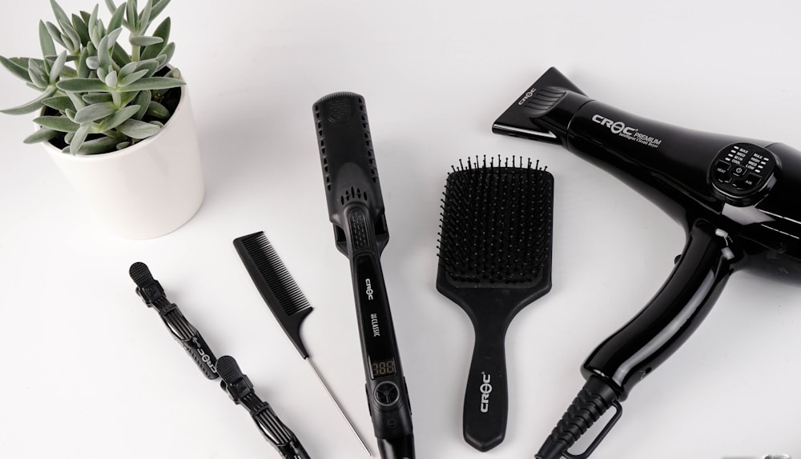

1. The Science of Textile and Leather Degradation
A luxury handbag crafted from natural silk velvet and vegetable-tanned calfskin is an organic entity composed of delicate protein and cellulose polymers. From the moment a bag leaves the atelier climate, it is exposed to environmental factors that can induce gradual molecular decay: ultraviolet solar radiation, relative humidity fluctuations, atmospheric pollutants, and fungal spores.
Leather collagen fibers require an internal equilibrium moisture content of between 12% and 14% to maintain tensile elasticity. When exposed to arid environments or forced-air heating, collagen fibrils dehydrate, cross-link, and become brittle, resulting in irreversible micro-fractures in the grain layer. Conversely, excessive humidity fosters mold colonization and hardware oxidation. Preserving an heirloom tote for decades requires a disciplined museum-grade conservation regimen.
2. Environmental Climate Control: The Museum Standard
To ensure generational longevity, luxury bag collections should be stored in environments that conform to international museum textile preservation standards:
The Golden Preservation Parameters:
• Relative Humidity (RH): Maintain between 45% and 55% RH. Fluctuations exceeding ±10% in a 24-hour cycle cause rapid dimensional expansion and contraction of leather gussets.
• Temperature: Maintain between 18°C and 22°C (65°F – 72°F). High temperatures accelerate lipid degradation and soften edge waxes.
• Illumination: Zero exposure to direct sunlight. Ultraviolet rays degrade natural aniline dyes within 300 hours and photo-oxidize silk velvet fibers, turning deep jewel tones dull and brittle.
| Material Component | Primary Environmental Threat | Recommended Conservation Tool | Maintenance Frequency |
|---|---|---|---|
| Venetian Silk Velvet | Pile crushing, dust accumulation, UV fading | Natural Horsehair Brush & Handheld Garment Steamer (Distilled Water) | Bi-weekly steam brush; store in dark breathable cotton |
| Full-Grain Box Calf | Collagen dehydration, surface cracking, drying | Pure Organic Beeswax Balm with Jojoba Oil | Semi-annual micro-conditioning massage |
| Solid Brass Hardware | Surface fingerprint acidity, micro-scratches | Untreated Microfiber Jewelry Cloth | Wipe down after each worldly outing |
| Interior Lambskin Lining | Pen ink leaks, cosmetic powder residue | Acid-Free Blotting Paper & Silk Organizer Inserts | Immediate spot inspection after travel |
3. The Velvet Restoration Protocol: Rejuvenating Crushed Pile
Unlike synthetic polyester velvet, which melts and permanently fuses under heat, genuine silk velvet responds miraculously to gentle thermal hydration. If your tote experiences temporary pile crushing from seating or storage pressure:
Hold a handheld garment steamer filled with pure distilled water approximately 15 centimeters away from the velvet surface, allowing a warm vapor cloud to envelope the fibers without wetting the underlying leather backing. Immediately follow the steam with gentle strokes of a natural horsehair bristle brush moving against the natural grain (rebrousse-poil) to lift the flattened pile, followed by a light stroke along the grain to align the luster.
4. Nourishing Leather Collagen: The Micro-Dosing Principle
The most common mistake collectors make is over-conditioning their leather bags. Applying excessive amounts of heavy oils (such as mineral oil, neatsfoot oil, or silicone-based creams) clogs leather pores, suffocates collagen fibers, softens structural stiffeners, and attracts environmental grime like a magnet.
- The Rule of Micro-Dosing: Apply a dime-sized amount of specialized neutral organic beeswax and lanolin cream onto a lint-free cotton flannel cloth—never directly onto the leather itself.
- Circular Motion: Massage the balm into the calfskin using gentle, circular motions, allowing body warmth from your fingers to melt the natural waxes into the grain.
- Rest & Buff: Allow the bag to rest for twenty minutes in a ventilated room, then buff vigorously with a clean horsehair brush to produce a deep, radiant glow.
5. Archival Storage Architecture: Acid-Free Tissue and Breathable Cotton
When retiring a luxury tote for the season, proper storage architecture is critical to avoid permanent structural distortion:
- Never Store in Plastic: Storing luxury leather in sealed plastic bags or airtight bins traps residual humidity, accelerating fungal growth and causing leather to "sweat" and rot.
- Acid-Free Tissue Stuffing: Loosely fill the interior chambers with unbuffered, acid-free archival tissue paper. This supports the side gussets and base arches without over-stuffing or straining the zipper seams.
- Breathable Dust Sleeves: Always enclose the bag in its original 100% unbleached cotton flannel dust bag, ensuring that metal chain straps or zipper pulls are tucked inside tissue sleeves to prevent hardware indentation on exterior velvet.
6. Emergency Spill and Stain Management Protocols
Accidents require immediate, calm action. If liquid is spilled upon velvet or leather, resist the urge to scrub vigorously, as friction will drive the stain deep into fiber cores:
Emergency First Aid for Luxury Bags:
• Liquid Spills: Immediately blot the liquid gently with a clean, dry white cotton towel or acid-free blotting paper. Do not rub.
• Oil or Grease Spots: Dust the affected area immediately with pure pharmaceutical-grade cornstarch or French chalk. Allow the powder to absorb the lipid over twelve hours, then gently brush away with a soft camel-hair brush.
• Rain Exposure: Wipe away surface droplets with a soft dry cloth and allow the bag to air dry naturally at room temperature away from radiators or hairdryers.
6. Managing Environmental Disasters: Mold Remediation Protocols
If a luxury bag is accidentally subjected to high humidity (exceeding 70% RH) in a non-climate-controlled environment, fungal micro-spores can germinate on organic leather surfaces. When discovering surface bloom, never apply bleach, household disinfectants, or wet soapy sponges, as these harsh alkaline agents permanently denature leather proteins.
Instead, immediately isolate the bag in a dry, well-ventilated room (40% RH). Using a dry, soft camel-hair brush, gently remove surface spores outdoors. Next, apply a specialized pH-balanced organic tea-tree and lanolin emulsion using a clean microfiber cloth, which safely eradicates residual fungal hyphae while restoring essential moisture to the collagen matrix without staining delicate silk velvet accents.
7. Seasonal Rotation and Travel Transport Security
When transporting your luxury tote during international flights, never check it as hold luggage where cargo holds experience extreme freezing temperatures (-40°C) that can make leather glues brittle and crack edge waxes. Always carry your tote inside its breathable cotton flannel dust bag within your primary cabin luggage, ensuring it is shielded from abrasive hard-sided suitcase zippers.
7. Frequently Asked Questions on Bag Preservation
8. Conclusion: The Art of Generational Stewardship
A masterfully crafted luxury tote is not a consumable luxury; it is a permanent work of art. By implementing disciplined archival preservation protocols, you ensure that the deep luster of your velvet and the supple elegance of your leather will continue to inspire admiration for decades to come.